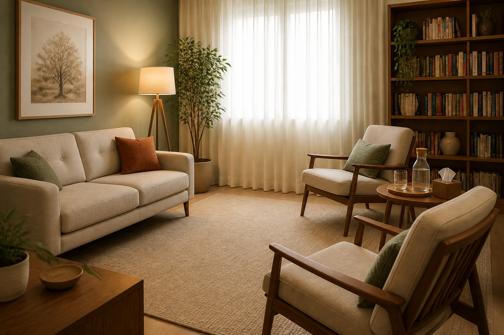

Adolescentes e jovens
Escuta para atravessamentos, escolhas, angústias e construção de identidade.

Atendimento Psicanalítico
Um espaço de escuta para que a palavra encontre caminho, forma e destino.
Psicanálise & Vida
A fala é o caminho para as palavras escoarem da mente. Formam ondas que movimentam a alma. Vamos juntos navegar neste mar?
Encontrar a escuta para sua voz: não estar só falando ao vento ou engolindo as palavras, mas formando um par que juntos ouvirão e dirão o que há de mais importante para sua vida.
Atendimento Presencial e Online
Público: adolescentes, jovens e adultos, casal, em Sorocaba (SP) ou de forma remota para todo o país e exterior.
Escuta para atravessamentos, escolhas, angústias e construção de identidade.
Um espaço para elaborar afetos, relações, ansiedade, perdas e questões de vida.
Trabalho de fala e escuta para vínculos, conflitos e modos de estar junto.
Sobre mim
Com formação pelo ILPC, Instituto Latino-Americano de Psicanálise Contemporânea, tendo especializações em Psicoterapia Breve Operacionalizada e Psicoterapia Psicanalítica, ambas de Ryad Simon (UNIP), além de Transtornos Ansiosos e Depressivos e Neuropsicanálise (Faculdade Unyleya).
Diretora e professora do INPSI, Instituto Nacional de Psicanálise, com sede em Sorocaba, fundado em 2013, tendo formado mais de 150 psicanalistas. O instituto também realiza cursos e seminários para profissionais das áreas psi, oferecendo um estudo continuado.
Reflexão
Um texto sobre vínculos profundos, escuta verdadeira, solitude e o caminho psicanalítico como possibilidade de aproximação de si e do outro.
Ler reflexão